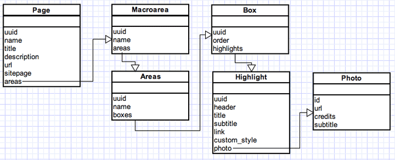

- v1.0.0 (02-06-2011)
Publicação Multi-Dispositivos¶
A aplicação de publicacão multi-dispositivos permite a criação simplificada de versões de conteúdos da plataforma (home, matéria, galeria) para diferentes dispositivos (touch-phones, tablets, etc).
Instalação¶
Para utilizar esta funcionalidade do libby, inclua a seguinte app como INSTALLED_APPS:
INSTALLED_APPS = [
#...
'libby.aplicacoes.publicacao_multi_dispositivos',
#...
]
Warning
Para o funcionamento correto da aplicação de publicação multi-dispositivos, é necessária a instalação das urls de devices. A página de instalação possui mais detalhes sobre este processo.
Funcionamento¶
A aplicação de publicação multi-dispositivos assina os eventos de publicação de conteúdo do globo.cms (matéria, galeria e home) para publicar, em conjunto, as versões para cada dispositivo.
Quais dispositivos e quais versões para cada conteúdo fica totalmente a cargo de cada produto. O libby virá com algumas propostas de versões para dispositivos móveis (touch-phones).
Para atender a um tipo de dispositivo específico, basta a criação de uma app que atenda a algumas particularidades.
Anatomia de App de Dispositivo¶
Para atender a um novo tipo de dispositivo, muito poucas modificações são necessárias a uma app django normal.
A primeira é que seja criado um arquivo conf.py como este.
A segunda particularidade é a criação de um arquivo chamado device_urls, contendo as urls que serão publicadas para o dispositivo, como este.
conf.py¶
Este arquivo de configuração possui duas informações úteis para a publicação de multi-dispositivos: SLUG_DISPOSITIVO e URLS_PUBLICACAO_MULTI_DISPOSITIVOS.
O primeiro argumento é o SLUG do dispositivo, que será usado para gerar a URL pela qual o dispositivo será gerado. No caso do arquivo da app touchphone do libby, a página /index.html seria gerada em /dispositivos/touchphone/index.html. Já a página folder1/page.html seria gerada em /dispositivos/touchphone/folder1/page.html.
O segundo argumento são as urls que precisam ser publicadas para este tipo de dispositivo. No caso do arquivo de urls da app touchphone do libby, estamos especificando que quando uma home for publicada, deve ser utilizada a url de nome ‘libby_touchphone_home’. Mais sobre urls abaixo.
device_urls.py¶
Este arquivo é um arquivo de urls padrão do django. A única coisa importante a lembrar deste arquivo é que as URLs especificadas aqui PRECISAM ter um nome definido.
Além disso, elas PRECISAM aceitar um argumento kwargs chamado ‘page_url’, que é a url da página original. Este argumento será usado depois para carregar o model de página (mais abaixo).
Um exemplo destas urls é:
url('(?P<page_url>(.+))$', home, name='libby_touchphone_home'),
A regra acima pode ser inclusiva pois está abaixo de dispositivos/touchphone. Sendo assim, não colide com outras regras de outras apps.
App Django Normal¶
Tirando as particularidades acima, a app de um dispositivo em particular nada mais é que uma app django normal.
Após estas configurações, basta criar views que atendam a cada um dos tipos de conteúdo e implementar templates/medias/etc.
Modelo de Dados Alternativo¶
O modelo de estrutura atual do globocore não é muito otimizado para templates, dado que os templates acabam fazendo inúmeras queries durante sua renderização.
A app de publicação multi-conteúdos vem com alguns helpers que ajudam a gerar um modelo mais simples e todo carregado para o template.
Um diagrama ilustrando o modelo de dados simplificado:
Warning
LEMBRE: Esta imagem é ilustrativa e pode não estar sincronizada com a versão mais atual desta aplicação. Para ver os detalhes do modelo simplificado, o melhor lugar é o código do model.
Para obter o modelo simplificado, basta utilizar o helper de model:
from libby.aplicacoes.publicacao_multi_dispositivos.helpers import ModelHelper
def my_device_view(request, page_url):
page = ModelHelper.load_by_url(page_url)
#faz alguma coisa com o model de page
#renderiza um template ou algo assim